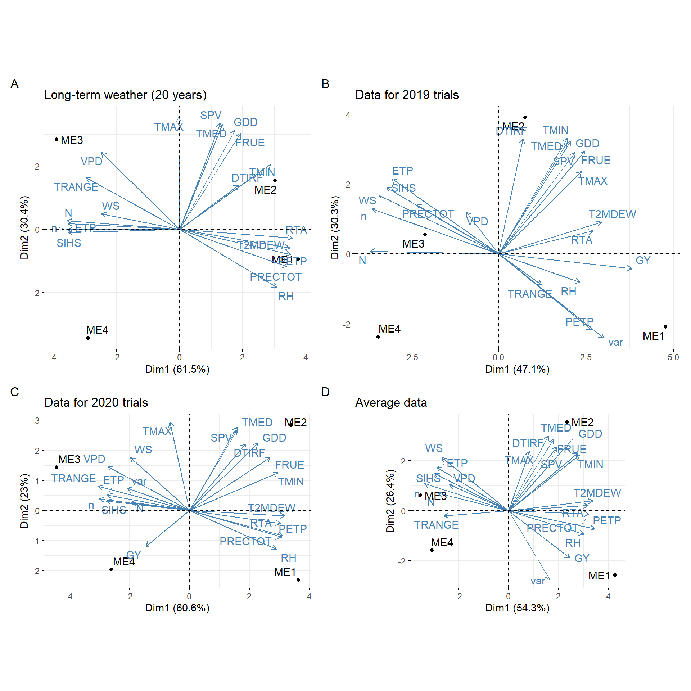

Analysis
1 Libraries
To reproduce the examples of this material, the R packages the following packages are needed.
# it is suggested to use the dev version of metan package
# remotes::install_github("TiagoOlivoto/metan")
library(EnvRtype)
library(rio)
library(factoextra)
library(FactoMineR)
library(ggrepel)
library(ggh4x)
library(superheat)
library(ggridges)
library(tidyverse)
library(metan)
library(rnaturalearth)
# a ggplot2 theme for the plots
my_theme <-
theme_bw() +
theme(panel.spacing = unit(0, "cm"),
panel.grid = element_blank(),
legend.position = "bottom")2 Datasets
2.1 Traits
df_traits <-
import("https://bit.ly/df_traits") |>
metan::as_factor(1:3)
# grain yield mean in each environment
df_gy <-
df_traits |>
means_by(ENV, .vars = GY)2.2 Climate variables
2.2.1 Scripts to gather data
df_env <- import("https://bit.ly/local_info")
ENV <- df_env$Code
LAT <- df_env$Lat
LON <- df_env$Lon
ALT <- df_env$Alt
START <- df_env$Sowing
END <- df_env$Harvesting
# see more at https://github.com/allogamous/EnvRtype
df_climate <-
get_weather(env.id = ENV,
lat = LAT,
lon = LON,
start.day = START,
end.day = END)
# GDD: Growing Degree Day (oC/day)
# FRUE: Effect of temperature on radiation use efficiency (from 0 to 1)
# T2M_RANGE: Daily Temperature Range (oC day)
# SPV: Slope of saturation vapour pressure curve (kPa.Celsius)
# VPD: Vapour pressure deficit (kPa)
# ETP: Potential Evapotranspiration (mm.day)
# PEPT: Deficit by Precipitation (mm.day)
# n: Actual duration of sunshine (hour)
# N: Daylight hours (hour)
# RTA: Extraterrestrial radiation (MJ/m^2/day)
# SRAD: Solar radiation (MJ/m^2/day)
# T2M: Temperature at 2 Meters
# T2M_MAX: Maximum Temperature at 2 Meters
# T2M_MIN: Minimum Temperature at 2 Meters
# PRECTOT: Precipitation
# WS2M: Wind Speed at 2 Meters
# RH2M: Relative Humidity at 2 Meters
# T2MDEW: Dew/Frost Point at 2 Meters
# ALLSKY_SFC_LW_DWN: Downward Thermal Infrared (Longwave) Radiative Flux
# ALLSKY_SFC_SW_DWN: All Sky Insolation Incident on a Horizontal Surface
# ALLSKY_TOA_SW_DWN: Top-of-atmosphere Insolation
# [1] "env" "ETP" "GDD" "PETP" "RH2M" "SPV"
# [8] "T2M" "T2M_MAX" "T2M_MIN" "T2M_RANGE" "T2MDEW" "VPD"
# Compute other parameters
env_data <-
df_climate %>%
as.data.frame() %>%
param_temperature(Tbase1 = 10, # choose the base temperature here
Tbase2 = 33, # choose the base temperature here
merge = TRUE) %>%
param_atmospheric(merge = TRUE) %>%
param_radiation(merge = TRUE)2.2.2 Tidy climate data
env_data_me <- import("https://bit.ly/df_climate")
env_data <- env_data_me |> remove_cols(me)
str(env_data)
## 'data.frame': 2257 obs. of 20 variables:
## $ env : chr "DZ2019" "DZ2019" "DZ2019" "DZ2019" ...
## $ LON : num 117 117 117 117 117 ...
## $ LAT : num 37.7 37.7 37.7 37.7 37.7 ...
## $ YEAR : int 2019 2019 2019 2019 2019 2019 2019 2019 2019 2019 ...
## $ MM : int 6 6 6 6 6 6 6 6 6 6 ...
## $ DD : int 5 6 7 8 9 10 11 12 13 14 ...
## $ DOY : int 156 157 158 159 160 161 162 163 164 165 ...
## $ YYYYMMDD : chr "06/05/2019" "06/06/2019" "06/07/2019" "06/08/2019" ...
## $ daysFromStart: int 1 2 3 4 5 6 7 8 9 10 ...
## $ tmean : num 24.2 23.5 25.7 28.9 26.1 ...
## $ tmax : num 26.8 30.3 33.6 36.9 32.9 ...
## $ tmin : num 21.1 18.4 16.2 22.2 19.8 ...
## $ prec : num 13.25 1.42 0.02 0.09 0.02 ...
## $ trange : num 5.7 11.9 17.4 14.6 13.1 ...
## $ rh : num 62.1 60 51.8 47.5 42.4 ...
## $ etp : num 5.21 6.34 10.05 11.66 13.67 ...
## $ dbp : num 8.04 -4.92 -10.03 -11.57 -13.65 ...
## $ svpc : num 0.178 0.182 0.188 0.238 0.203 ...
## $ vpd : num 1.16 1.61 1.95 2.83 2.38 ...
## $ sihs : num 11.5 13.9 22 24.9 29.7 ...3 Scripts
3.1 Location map
china <-
ne_states(country = c("china", "taiwan"),
returnclass = "sf")
locs <-
import("https://bit.ly/local_info") %>%
distinct(Lat, .keep_all = TRUE)
china <-
mutate(china,
Province = ifelse(name %in% locs$Province, name, NA))
ggplot(data = china) +
geom_sf(aes(fill = Province), size = 0.2) +
ggthemes::theme_map() +
scale_fill_discrete(na.value = "gray97",
labels = c(unique(locs$Province), "others")) +
geom_point(data = locs,
aes(x = Lon, y = Lat, size = Altitude),
color = "black",
fill = "red",
shape = 21) +
geom_label_repel(data = locs,
aes(label = Location,
x = Lon,
y = Lat),
fill = "green",
color = "black",
segment.color = 'black',
force = 38,
size = 3) +
theme(legend.position = c(0.95, 0.1))
Figure 3.1: Location map
ggsave("figs/fig1_map.png", width = 10, height = 7)3.2 Environmental kinships
id_var <- names(env_data)[10:20]
EC <- W_matrix(env.data = env_data,
var.id = id_var,
by.interval = TRUE,
statistic = 'quantile',
time.window = c(0, 15, 35, 65, 90, 120))
distances <-
env_kernel(env.data = EC,
gaussian = TRUE)
d <-
superheat(distances[[2]],
heat.pal = c("#b35806", "white", "#542788"),
pretty.order.rows = TRUE,
pretty.order.cols = TRUE,
col.dendrogram = TRUE,
legend.width = 4,
left.label.size = 0.1,
bottom.label.text.size = 5,
bottom.label.size = 0.2,
bottom.label.text.angle = 90,
legend.text.size = 17,
heat.lim = c(0, 1),
padding = 0.5,
legend.height=0.2)
Figure 3.2: Similarity
ggsave(filename = "figs/fig2_heat_env.png",
plot = d$plot,
width = 10,
height = 10)
# long format for climate data
env_data_d <-
env_data_me |>
remove_cols(env, prec, LON:YYYYMMDD, daysFromStart) |>
pivot_longer(-me)
# long format for grain yield
df_gy_dist <-
df_traits |>
select(me, GY) |>
mutate(name = "GY", .after = me) |>
rename(value = GY)3.3 Correlation analysis
env_data |>
corr_coef(tmean:sihs) |>
network_plot(min_cor = 0.4)
Figure 3.3: correlation analysis
ggsave("figs/fig3_network.png", width = 8, height = 8)3.4 Principal component analysis
pca <-
import("https://bit.ly/df_pca") |>
column_to_rownames("env")
# compute the PCA with
pca_model <- PCA(pca,
quali.sup = 14,
graph = FALSE)
fviz_pca_biplot(pca_model,
repel = TRUE,
habillage = 14,
col.var = "gray40",
title = NULL) +
coord_equal()
Figure 3.4: biplot for PCA
ggsave("figs/fig4_pca.png", width = 7, height = 7)3.5 Environmental tipology (vapor pressure deficit)
names.window <- c('1-intial growing','2-leaf expansion I','3-leaf expansion II','4-flowering','5-grain filling', "")
out <-
env_typing(env.data = env_data,
env.id = "env",
var.id = c("trange", "tmax", "tmin", "dbp", "etp", "vpd"),
by.interval = TRUE,
time.window = c(0, 15, 35, 65, 90, 120),
names.window = names.window)
mes <-
distinct(df_traits, ENV, .keep_all = TRUE) |>
select(ENV, me)
out2 <-
separate(out,
env.variable,
into = c("var", "freq"),
sep = "_",
extra = "drop") |>
left_join(mes, by = c("env" = "ENV"))# plot the distribution of envirotypes for dbp
variable <- "vpd"
p1 <-
out2 |>
subset(var == variable) |> # change the variable here
ggplot() +
geom_bar(aes(x=Freq, y=env,fill=freq),
position = "fill",
stat = "identity",
width = 1,
color = "white",
size=.2)+
facet_grid(me~interval, scales = "free", space = "free")+
scale_y_discrete(expand = c(0,0))+
scale_x_continuous(expand = c(0,0))+
xlab('Relative frequency of the vapor pressure deficit')+
ylab("Environment")+
labs(fill='Envirotype')+
theme(axis.title = element_text(size=12),
legend.text = element_text(size=9),
strip.text = element_text(size=12),
legend.title = element_text(size=12),
strip.background = element_rect(fill="gray95",size=1),
legend.position = 'bottom')
# by mega environment
p2 <-
out2 |>
subset(var == variable) |> # change the variable here
sum_by(me, freq, interval) |>
ggplot() +
geom_bar(aes(x=Freq, y=me,fill=freq),
position = "fill",
stat = "identity",
width = 1,
color = "white",
size=.2)+
facet_wrap(~interval, nrow = 1)+
scale_y_discrete(expand = c(0,0))+
scale_x_continuous(expand = c(0,0))+
xlab('Relative frequency of the vapor pressure deficit')+
ylab("Mega\nenvironment")+
labs(fill='Envirotype')+
theme(axis.title = element_text(size=12),
legend.text = element_text(size=9),
strip.text = element_text(size=12),
legend.title = element_text(size=12),
strip.background = element_rect(fill="gray95",size=1),
legend.position = 'bottom') +
scale_fill_discrete(direction = 1)
arrange_ggplot(p1, p2,
heights = c(0.85, 0.15),
tag_levels = "A",
guides = "collect")

Figure 3.5: Quantiles for vapor pressure deficit observed in the studied environments (a) and mega-environments (b) across distinct crop stages.
ggsave("figs/fig5_typology_vpd.png", width = 12, height = 7)3.6 Selection for all environments
3.6.1 Deviance analysis
mod_global <-
waasb(df_traits,
env = ENV,
gen = GEN,
rep = REP,
resp = c(GMC, PH, EH, BTL, GY, EL, ER, GWE, HSW),
mresp = c("l, l, l, l, h, h, h, h, h"),
wresp = c(60, 60, 60, 60, 75, 60, 60, 60, 60),
random = "all")3.6.2 MTSI for all the environments
## mtsi global
SI <- 25
mtsi_global <- mtsi(mod_global, SI = SI)
##
## -------------------------------------------------------------------------------
## Principal Component Analysis
## -------------------------------------------------------------------------------
## # A tibble: 9 × 4
## PC Eigenvalues `Variance (%)` `Cum. variance (%)`
## <chr> <dbl> <dbl> <dbl>
## 1 PC1 2.77 30.8 30.8
## 2 PC2 1.81 20.2 50.9
## 3 PC3 1.30 14.5 65.4
## 4 PC4 0.995 11.1 76.5
## 5 PC5 0.758 8.42 84.9
## 6 PC6 0.665 7.39 92.3
## 7 PC7 0.414 4.60 96.9
## 8 PC8 0.198 2.20 99.1
## 9 PC9 0.0808 0.897 100
## -------------------------------------------------------------------------------
## Factor Analysis - factorial loadings after rotation-
## -------------------------------------------------------------------------------
## # A tibble: 9 × 6
## VAR FA1 FA2 FA3 Communality Uniquenesses
## <chr> <dbl> <dbl> <dbl> <dbl> <dbl>
## 1 GMC 0.714 0.173 0.0699 0.545 0.455
## 2 PH 0.839 -0.170 -0.186 0.767 0.233
## 3 EH 0.840 -0.258 -0.0147 0.772 0.228
## 4 BTL 0.0140 0.00281 -0.738 0.545 0.455
## 5 GY 0.277 0.666 -0.469 0.741 0.259
## 6 EL -0.108 0.0726 -0.622 0.404 0.596
## 7 ER -0.238 0.803 0.379 0.845 0.155
## 8 GWE -0.224 0.859 -0.239 0.845 0.155
## 9 HSW -0.570 0.117 -0.295 0.425 0.575
## -------------------------------------------------------------------------------
## Comunalit Mean: 0.6543019
## -------------------------------------------------------------------------------
## Selection differential for the waasby index
## -------------------------------------------------------------------------------
## # A tibble: 9 × 6
## VAR Factor Xo Xs SD SDperc
## <chr> <chr> <dbl> <dbl> <dbl> <dbl>
## 1 GMC FA 1 49.4 42.2 -7.14 -14.5
## 2 PH FA 1 56.1 63.3 7.20 12.8
## 3 EH FA 1 47.4 45.9 -1.49 -3.15
## 4 HSW FA 1 61.4 69.0 7.63 12.4
## 5 GY FA 2 59.6 79.5 19.9 33.3
## 6 ER FA 2 53.5 58.5 5.02 9.39
## 7 GWE FA 2 59.5 76.4 16.9 28.3
## 8 BTL FA 3 61.9 78.7 16.8 27.1
## 9 EL FA 3 46.6 63.5 16.9 36.3
## -------------------------------------------------------------------------------
## Selection differential for the mean of the variables
## -------------------------------------------------------------------------------
## # A tibble: 9 × 11
## VAR Factor Xo Xs SD SDperc h2 SG SGperc sense goal
## <chr> <chr> <dbl> <dbl> <dbl> <dbl> <dbl> <dbl> <dbl> <chr> <dbl>
## 1 GMC FA 1 28.3 29.0 0.666 2.36 0.709 0.472 1.67 decrea… 0
## 2 PH FA 1 275. 276. 0.492 0.179 0.910 0.448 0.163 decrea… 0
## 3 EH FA 1 107. 110. 3.57 3.34 0.856 3.05 2.85 decrea… 0
## 4 HSW FA 1 34.1 34.2 0.189 0.554 0.741 0.140 0.411 increa… 100
## 5 GY FA 2 10.2 10.5 0.297 2.91 0.176 0.0522 0.512 increa… 100
## 6 ER FA 2 16.1 16.1 -0.0830 -0.514 0.912 -0.0757 -0.469 increa… 0
## 7 GWE FA 2 171. 176. 5.38 3.15 0.567 3.05 1.79 increa… 100
## 8 BTL FA 3 1.42 1.18 -0.241 -17.0 0.699 -0.169 -11.9 decrea… 100
## 9 EL FA 3 18.2 18.4 0.223 1.22 0.745 0.166 0.912 increa… 100
## ------------------------------------------------------------------------------
## Selected genotypes
## -------------------------------------------------------------------------------
## G4 G5 G18 G15 G13 G10
## -------------------------------------------------------------------------------
sel_gen <- mtsi_global$sel_gen3.7 Selection within each mega-environment
3.7.1 Mixed model
mod_me <-
df_traits |>
waasb(env = ENV,
gen = GEN,
rep = REP,
resp = c(GMC, PH, EH, BTL, GY, EL, ER, GWE, HSW),
mresp = c("l, l, l, l, h, h, h, h, h"),
wresp = c(60, 60, 60, 60, 75, 60, 60, 60, 60),
random = "all",
by = me)3.7.2 Multi-trait stability index
## mtsi me1
mtsi_me1 <- mtsi(mod_me$data[[1]], SI = SI)
##
## -------------------------------------------------------------------------------
## Principal Component Analysis
## -------------------------------------------------------------------------------
## # A tibble: 9 × 4
## PC Eigenvalues `Variance (%)` `Cum. variance (%)`
## <chr> <dbl> <dbl> <dbl>
## 1 PC1 2.45 27.2 27.2
## 2 PC2 1.87 20.8 48.1
## 3 PC3 1.44 16.0 64.0
## 4 PC4 0.929 10.3 74.4
## 5 PC5 0.782 8.69 83.1
## 6 PC6 0.583 6.48 89.5
## 7 PC7 0.527 5.85 95.4
## 8 PC8 0.243 2.70 98.1
## 9 PC9 0.172 1.91 100
## -------------------------------------------------------------------------------
## Factor Analysis - factorial loadings after rotation-
## -------------------------------------------------------------------------------
## # A tibble: 9 × 6
## VAR FA1 FA2 FA3 Communality Uniquenesses
## <chr> <dbl> <dbl> <dbl> <dbl> <dbl>
## 1 GMC -0.509 -0.486 0.168 0.524 0.476
## 2 PH -0.878 0.0376 -0.170 0.801 0.199
## 3 EH -0.844 0.152 0.173 0.765 0.235
## 4 BTL -0.0761 0.763 -0.0236 0.588 0.412
## 5 GY -0.0111 -0.0206 -0.746 0.557 0.443
## 6 EL 0.192 0.605 -0.348 0.524 0.476
## 7 ER 0.159 -0.826 -0.234 0.762 0.238
## 8 GWE 0.0495 0.0276 -0.864 0.750 0.250
## 9 HSW 0.489 0.133 -0.486 0.492 0.508
## -------------------------------------------------------------------------------
## Comunalit Mean: 0.6403778
## -------------------------------------------------------------------------------
## Selection differential for the waasby index
## -------------------------------------------------------------------------------
## # A tibble: 9 × 6
## VAR Factor Xo Xs SD SDperc
## <chr> <chr> <dbl> <dbl> <dbl> <dbl>
## 1 GMC FA 1 49.4 43.9 -5.48 -11.1
## 2 PH FA 1 50.6 65.5 14.9 29.5
## 3 EH FA 1 51.7 59.4 7.73 15.0
## 4 HSW FA 1 64.8 73.3 8.50 13.1
## 5 BTL FA 2 67.0 70.3 3.28 4.90
## 6 EL FA 2 44.8 57.3 12.5 28.0
## 7 ER FA 2 56.5 57.7 1.19 2.10
## 8 GY FA 3 58.3 69.6 11.3 19.4
## 9 GWE FA 3 54.4 74.4 20.1 36.9
## -------------------------------------------------------------------------------
## Selection differential for the mean of the variables
## -------------------------------------------------------------------------------
## # A tibble: 9 × 11
## VAR Factor Xo Xs SD SDperc h2 SG SGperc sense
## <chr> <chr> <dbl> <dbl> <dbl> <dbl> <dbl> <dbl> <dbl> <chr>
## 1 GMC FA 1 26.0 26.2 0.168 0.644 0.412 6.90e-2 2.65e-1 decr…
## 2 PH FA 1 280. 274. -5.69 -2.03 0.847 -4.82e+0 -1.72e+0 decr…
## 3 EH FA 1 110. 109. -0.739 -0.671 0.814 -6.01e-1 -5.46e-1 decr…
## 4 HSW FA 1 34.4 34.7 0.254 0.739 0.366 9.32e-2 2.71e-1 incr…
## 5 BTL FA 2 1.46 1.45 -0.00291 -0.200 0.649 -1.88e-3 -1.30e-1 decr…
## 6 EL FA 2 18.0 18.1 0.0924 0.513 0.452 4.17e-2 2.32e-1 incr…
## 7 ER FA 2 16.3 16.4 0.0982 0.604 0.848 8.33e-2 5.12e-1 incr…
## 8 GY FA 3 10.0 10.2 0.183 1.82 0.0000258 4.72e-6 4.71e-5 incr…
## 9 GWE FA 3 165. 173. 7.57 4.58 0.284 2.15e+0 1.30e+0 incr…
## # … with 1 more variable: goal <dbl>
## # ℹ Use `colnames()` to see all variable names
## ------------------------------------------------------------------------------
## Selected genotypes
## -------------------------------------------------------------------------------
## G4 G13 G9 G10 G5 G22
## -------------------------------------------------------------------------------
## mtsi me2
mtsi_me2 <- mtsi(mod_me$data[[2]], SI = SI)
##
## -------------------------------------------------------------------------------
## Principal Component Analysis
## -------------------------------------------------------------------------------
## # A tibble: 9 × 4
## PC Eigenvalues `Variance (%)` `Cum. variance (%)`
## <chr> <dbl> <dbl> <dbl>
## 1 PC1 2.65 29.5 29.5
## 2 PC2 2.07 23.0 52.5
## 3 PC3 1.40 15.6 68.0
## 4 PC4 0.883 9.81 77.8
## 5 PC5 0.697 7.75 85.6
## 6 PC6 0.512 5.69 91.3
## 7 PC7 0.437 4.86 96.1
## 8 PC8 0.203 2.26 98.4
## 9 PC9 0.146 1.62 100
## -------------------------------------------------------------------------------
## Factor Analysis - factorial loadings after rotation-
## -------------------------------------------------------------------------------
## # A tibble: 9 × 6
## VAR FA1 FA2 FA3 Communality Uniquenesses
## <chr> <dbl> <dbl> <dbl> <dbl> <dbl>
## 1 GMC -0.216 0.0894 0.761 0.634 0.366
## 2 PH -0.895 -0.0773 0.268 0.878 0.122
## 3 EH -0.686 -0.156 0.318 0.596 0.404
## 4 BTL -0.423 -0.755 -0.0571 0.752 0.248
## 5 GY -0.0978 -0.584 0.497 0.598 0.402
## 6 EL 0.153 -0.106 0.752 0.600 0.400
## 7 ER 0.738 -0.428 0.302 0.819 0.181
## 8 GWE 0.0937 -0.930 -0.0143 0.874 0.126
## 9 HSW 0.564 0.157 0.161 0.369 0.631
## -------------------------------------------------------------------------------
## Comunalit Mean: 0.6800917
## -------------------------------------------------------------------------------
## Selection differential for the waasby index
## -------------------------------------------------------------------------------
## # A tibble: 9 × 6
## VAR Factor Xo Xs SD SDperc
## <chr> <chr> <dbl> <dbl> <dbl> <dbl>
## 1 PH FA 1 59.4 69.9 10.4 17.5
## 2 EH FA 1 51.6 60.9 9.28 18.0
## 3 ER FA 1 51.8 60.7 8.92 17.2
## 4 HSW FA 1 53.7 46.9 -6.86 -12.8
## 5 BTL FA 2 49.8 66.5 16.7 33.5
## 6 GY FA 2 49.9 70.3 20.3 40.7
## 7 GWE FA 2 51.7 63.4 11.7 22.7
## 8 GMC FA 3 52.6 68.0 15.4 29.3
## 9 EL FA 3 52.1 65.8 13.7 26.4
## -------------------------------------------------------------------------------
## Selection differential for the mean of the variables
## -------------------------------------------------------------------------------
## # A tibble: 9 × 11
## VAR Factor Xo Xs SD SDperc h2 SG SGperc sense
## <chr> <chr> <dbl> <dbl> <dbl> <dbl> <dbl> <dbl> <dbl> <chr>
## 1 PH FA 1 269. 259. -9.40 -3.50 6.98e-1 -6.57e+0 -2.44e+0 decr…
## 2 EH FA 1 101. 97.3 -3.79 -3.75 4.01e-1 -1.52e+0 -1.50e+0 decr…
## 3 ER FA 1 16.1 16.6 0.426 2.64 4.26e-1 1.82e-1 1.13e+0 incr…
## 4 HSW FA 1 33.9 34.1 0.176 0.520 9.85e-2 1.73e-2 5.12e-2 incr…
## 5 BTL FA 2 1.50 1.21 -0.285 -19.1 0 0 0 decr…
## 6 GY FA 2 10.1 10.8 0.706 6.98 7.39e-9 5.21e-9 5.16e-8 incr…
## 7 GWE FA 2 182. 188. 6.09 3.36 1.19e-1 7.23e-1 3.98e-1 incr…
## 8 GMC FA 3 32.4 31.4 -1.01 -3.12 9.45e-2 -9.55e-2 -2.95e-1 decr…
## 9 EL FA 3 18.7 18.9 0.211 1.13 3.22e-8 6.79e-9 3.63e-8 incr…
## # … with 1 more variable: goal <dbl>
## # ℹ Use `colnames()` to see all variable names
## ------------------------------------------------------------------------------
## Selected genotypes
## -------------------------------------------------------------------------------
## G4 G11 G2 G3 G23 G5
## -------------------------------------------------------------------------------
## mtsi me3
mtsi_me3 <- mtsi(mod_me$data[[3]], SI = SI)
##
## -------------------------------------------------------------------------------
## Principal Component Analysis
## -------------------------------------------------------------------------------
## # A tibble: 9 × 4
## PC Eigenvalues `Variance (%)` `Cum. variance (%)`
## <chr> <dbl> <dbl> <dbl>
## 1 PC1 2.98 33.1 33.1
## 2 PC2 1.66 18.4 51.5
## 3 PC3 1.45 16.1 67.6
## 4 PC4 1.10 12.2 79.8
## 5 PC5 0.663 7.37 87.1
## 6 PC6 0.467 5.19 92.3
## 7 PC7 0.279 3.10 95.4
## 8 PC8 0.265 2.95 98.4
## 9 PC9 0.145 1.61 100
## -------------------------------------------------------------------------------
## Factor Analysis - factorial loadings after rotation-
## -------------------------------------------------------------------------------
## # A tibble: 9 × 7
## VAR FA1 FA2 FA3 FA4 Communality Uniquenesses
## <chr> <dbl> <dbl> <dbl> <dbl> <dbl> <dbl>
## 1 GMC -0.444 -0.141 0.648 0.133 0.654 0.346
## 2 PH -0.928 0.00309 -0.119 -0.132 0.892 0.108
## 3 EH -0.863 0.196 0.211 0.0450 0.829 0.171
## 4 BTL -0.284 0.0150 -0.817 0.250 0.811 0.189
## 5 GY -0.247 -0.872 -0.00299 -0.0214 0.822 0.178
## 6 EL 0.0498 -0.0706 -0.0188 0.962 0.933 0.0666
## 7 ER 0.508 -0.738 0.123 0.0203 0.818 0.182
## 8 GWE 0.364 -0.734 -0.165 0.345 0.818 0.182
## 9 HSW 0.156 -0.461 -0.588 -0.143 0.603 0.397
## -------------------------------------------------------------------------------
## Comunalit Mean: 0.797801
## -------------------------------------------------------------------------------
## Selection differential for the waasby index
## -------------------------------------------------------------------------------
## # A tibble: 9 × 6
## VAR Factor Xo Xs SD SDperc
## <chr> <chr> <dbl> <dbl> <dbl> <dbl>
## 1 PH FA 1 60.6 67.1 6.52 10.8
## 2 EH FA 1 51.3 59.6 8.27 16.1
## 3 GY FA 2 60.3 73.8 13.5 22.3
## 4 ER FA 2 57.1 64.6 7.51 13.1
## 5 GWE FA 2 55.1 67.9 12.8 23.3
## 6 GMC FA 3 62.9 63.0 0.104 0.165
## 7 BTL FA 3 67.1 81.1 14.0 20.9
## 8 HSW FA 3 65.8 72.0 6.19 9.40
## 9 EL FA 4 55.4 69.6 14.2 25.7
## -------------------------------------------------------------------------------
## Selection differential for the mean of the variables
## -------------------------------------------------------------------------------
## # A tibble: 9 × 11
## VAR Factor Xo Xs SD SDperc h2 SG SGperc sense goal
## <chr> <chr> <dbl> <dbl> <dbl> <dbl> <dbl> <dbl> <dbl> <chr> <dbl>
## 1 PH FA 1 274. 268. -5.48 -2.00 0.830 -4.55 -1.66 decrease 100
## 2 EH FA 1 106. 105. -1.71 -1.61 0.708 -1.21 -1.14 decrease 100
## 3 GY FA 2 10.7 11.1 0.439 4.11 0.142 0.0625 0.586 increase 100
## 4 ER FA 2 15.9 16.1 0.193 1.21 0.899 0.173 1.09 increase 100
## 5 GWE FA 2 172. 177. 5.50 3.20 0.175 0.959 0.558 increase 100
## 6 GMC FA 3 28.7 29.2 0.478 1.67 0.423 0.202 0.705 decrease 0
## 7 BTL FA 3 1.26 1.04 -0.220 -17.4 0.704 -0.155 -12.3 decrease 100
## 8 HSW FA 3 33.5 34.1 0.539 1.61 0.617 0.333 0.993 increase 100
## 9 EL FA 4 18.2 18.7 0.466 2.56 0.651 0.303 1.66 increase 100
## ------------------------------------------------------------------------------
## Selected genotypes
## -------------------------------------------------------------------------------
## G16 G10 G5 G8 G4 G18
## -------------------------------------------------------------------------------3.8 Proportion of the phenotypic variance
vcall <- plot(mod_global,
type = "vcomp",
percent.digits = 1,
size.text.percent = 3,
rotate = TRUE)
vc1 <- plot(mod_me$data[[1]],
type = "vcomp",
percent.digits = 1,
size.text.percent = 3,
rotate = TRUE)
vc2 <- plot(mod_me$data[[2]],
type = "vcomp",
percent.digits = 1,
size.text.percent = 3,
rotate = TRUE)
vc3 <- plot(mod_me$data[[3]],
type = "vcomp",
percent.digits = 1,
size.text.percent = 3,
rotate = TRUE)
arrange_ggplot(vcall, vc1, vc2, vc3,
guides = "collect",
tag_levels = "A")
ggsave("figs/fig6_vcomp.png", width = 15, height = 7)3.9 MTSI plot

Figure 3.6: MTSI.
3.10 Selected genotypes in each ME
ALL <- mtsi_global$sel_gen
ME1 <- mtsi_me1$sel_gen
ME2 <- mtsi_me2$sel_gen
ME3 <- mtsi_me3$sel_gen
venn_plot(ALL, ME1, ME2, ME3, show_elements = TRUE)
Figure 3.7: selected genotypes
ggsave("figs/fig8_venn.png", width = 5, height = 5)3.11 Selection gains for mean performance
sd_trait_global <-
mtsi_global$sel_dif_trait %>%
select_cols(VAR, sense, Xo, SDperc)
sd_me1 <-
mtsi_me1$sel_dif_trait |>
select_cols(VAR, SDperc) |>
rename(SD_me1 = SDperc)
sd_me2 <-
mtsi_me2$sel_dif_trait |>
select_cols(VAR, SDperc) |>
rename(SD_me2 = SDperc)
sd_me3 <-
mtsi_me3$sel_dif_trait |>
select_cols(VAR, SDperc) |>
rename(SD_me3 = SDperc)
sel_gain_joint <-
sd_trait_global |>
rename(SD_ALL = SDperc) |>
left_join(sd_me1) |>
left_join(sd_me2) |>
left_join(sd_me3)
df_gains <-
sel_gain_joint |>
remove_cols(Xo) |>
pivot_longer(SD_ALL:SD_me3) |>
replace_string(sense,
pattern = "increase",
replacement = "Positive desired gains") |>
replace_string(sense,
pattern = "decrease",
replacement = "Negative desired gains") |>
mutate(negative = ifelse(value <= 0, "Negative", "Positive")) |>
replace_string(name, pattern = "SD_", replacement = "") |>
tidy_strings(name, sep = "")
ggplot(df_gains, aes(VAR, value)) +
geom_hline(yintercept = 0, size = 0.2) +
geom_col(aes(fill = negative),
col = "black",
size = 0.2) +
scale_y_continuous(expand = expansion(mult = 0.2)) +
facet_nested(~name + sense, scales = "free_x") +
geom_text(aes(label = round(value, 2),
hjust = ifelse(value > 0, -0.1, 1.1),
angle = 90),
size = 3) +
labs(x = "Selection strategy",
y = "Selection differential (%)") +
my_theme +
theme(legend.position = "bottom",
legend.title = element_blank(),
panel.grid.minor = element_blank())
Figure 3.8: Selection gains for mean performance
ggsave("figs/fig9_sd_mper.png", width = 14, height = 6)
# mean of differentials for BLUPs by each stragety
df_gains |> means_by(name, negative)3.12 PC1 x PC2 and WAASB x Y
p1 <-
plot_scores(mod_me$data[[1]],
type = 2,
var = "GY",
highlight = ME1,
size.tex.gen = 2.5,
title = FALSE,
col.alpha.gen = 0.6,
col.gen = "gray",
plot_theme = my_theme)
p2 <-
plot_scores(mod_me$data[[2]],
type = 2,
var = "GY",
highlight = ME2,
size.tex.gen = 2.5,
title = FALSE,
col.gen = "gray",
col.alpha.gen = 0.6,
plot_theme = my_theme)
p3 <-
plot_scores(mod_me$data[[3]],
type = 2,
var = "GY",
highlight = ME3,
size.tex.gen = 2.5,
title = FALSE,
col.gen = "gray",
col.alpha.gen = 0.6,
plot_theme = my_theme)
p4 <-
plot_scores(mod_me$data[[1]],
type = 3,
var = "GY",
highlight = ME1,
x.lim = c(8, 13),
x.lab = expression(Grain~yield~(t~ha^{-1})),
size.tex.gen = 2.5,
col.alpha.gen = 0.4,
col.gen = "gray",
size.bor.tick = 0.1,
plot_theme = my_theme)
p5 <-
plot_scores(mod_me$data[[2]],
type = 3,
var = "GY",
highlight = ME2,
x.lab = expression(Grain~yield~(t~ha^{-1})),
size.tex.gen = 2.5,
x.lim = c(8, 13),
col.alpha.gen = 0.4,
col.gen = "gray",
plot_theme = my_theme)
p6 <-
plot_scores(mod_me$data[[3]],
type = 3,
var = "GY",
highlight = ME3,
x.lab = expression(Grain~yield~(t~ha^{-1})),
size.tex.gen = 2.5,
x.lim = c(8, 13),
col.alpha.gen = 0.4,
col.gen = "gray",
plot_theme = my_theme)
arrange_ggplot(p1, p2, p3,
p4, p5, p6,
guides = "collect",
tag_levels = "A")Figure 3.9: PC1 x PC2 biplot
ggsave("figs/fig10_biplots.png", width = 14, height = 10)3.13 WAASB X Y biplot
4 Section info
sessionInfo()
## R version 4.2.0 (2022-04-22 ucrt)
## Platform: x86_64-w64-mingw32/x64 (64-bit)
## Running under: Windows 10 x64 (build 22000)
##
## Matrix products: default
##
## locale:
## [1] LC_COLLATE=Portuguese_Brazil.utf8 LC_CTYPE=Portuguese_Brazil.utf8
## [3] LC_MONETARY=Portuguese_Brazil.utf8 LC_NUMERIC=C
## [5] LC_TIME=Portuguese_Brazil.utf8
##
## attached base packages:
## [1] stats graphics grDevices utils datasets methods base
##
## other attached packages:
## [1] rnaturalearth_0.1.0 metan_1.17.0.9000 forcats_0.5.1
## [4] stringr_1.4.0 dplyr_1.0.9 purrr_0.3.4
## [7] readr_2.1.2 tidyr_1.2.0 tibble_3.1.7
## [10] tidyverse_1.3.1 ggridges_0.5.3 superheat_0.1.0
## [13] ggh4x_0.2.1 ggrepel_0.9.1 FactoMineR_2.4
## [16] factoextra_1.0.7 ggplot2_3.3.6 rio_0.5.29
## [19] EnvRtype_1.1.0
##
## loaded via a namespace (and not attached):
## [1] minqa_1.2.4 colorspace_2.0-3 ggsignif_0.6.3
## [4] ellipsis_0.3.2 class_7.3-20 ggdendro_0.1.23
## [7] fs_1.5.2 rstudioapi_0.13 proxy_0.4-27
## [10] ggpubr_0.4.0 farver_2.1.1 DT_0.23
## [13] fansi_1.0.3 lubridate_1.8.0 mathjaxr_1.6-0
## [16] xml2_1.3.3 codetools_0.2-18 splines_4.2.0
## [19] leaps_3.1 knitr_1.39 polyclip_1.10-0
## [22] jsonlite_1.8.0 nloptr_2.0.3 broom_1.0.0
## [25] cluster_2.1.3 dbplyr_2.2.1 ggforce_0.3.3
## [28] compiler_4.2.0 httr_1.4.3 backports_1.4.1
## [31] assertthat_0.2.1 Matrix_1.4-1 fastmap_1.1.0
## [34] cli_3.3.0 s2_1.1.0 tweenr_1.0.2
## [37] htmltools_0.5.2 tools_4.2.0 lmerTest_3.1-3
## [40] gtable_0.3.0 glue_1.6.2 reshape2_1.4.4
## [43] wk_0.6.0 ggthemes_4.2.4 Rcpp_1.0.8.3
## [46] carData_3.0-5 cellranger_1.1.0 jquerylib_0.1.4
## [49] vctrs_0.4.1 nlme_3.1-157 iterators_1.0.14
## [52] xfun_0.31 openxlsx_4.2.5 lme4_1.1-30
## [55] rvest_1.0.2 lifecycle_1.0.1 rnaturalearthhires_0.2.0
## [58] rstatix_0.7.0 MASS_7.3-57 scales_1.2.0
## [61] ragg_1.2.2 hms_1.1.1 RColorBrewer_1.1-3
## [64] yaml_2.3.5 curl_4.3.2 sass_0.4.1
## [67] reshape_0.8.9 stringi_1.7.6 highr_0.9
## [70] foreach_1.5.2 e1071_1.7-11 boot_1.3-28
## [73] zip_2.2.0 systemfonts_1.0.4 rlang_1.0.3
## [76] pkgconfig_2.0.3 evaluate_0.15 lattice_0.20-45
## [79] sf_1.0-8 labeling_0.4.2 patchwork_1.1.1
## [82] htmlwidgets_1.5.4 tidyselect_1.1.2 GGally_2.1.2
## [85] plyr_1.8.7 magrittr_2.0.3 bookdown_0.27
## [88] R6_2.5.1 generics_0.1.3 DBI_1.1.3
## [91] pillar_1.8.0 haven_2.5.0 foreign_0.8-82
## [94] withr_2.5.0 units_0.8-0 abind_1.4-5
## [97] sp_1.5-0 scatterplot3d_0.3-41 car_3.1-0
## [100] modelr_0.1.8 crayon_1.5.1 KernSmooth_2.23-20
## [103] utf8_1.2.2 tzdb_0.3.0 rmarkdown_2.14
## [106] grid_4.2.0 readxl_1.4.0 data.table_1.14.2
## [109] rmdformats_1.0.4 reprex_2.0.1 digest_0.6.29
## [112] classInt_0.4-7 flashClust_1.01-2 numDeriv_2016.8-1.1
## [115] textshaping_0.3.6 munsell_0.5.0 bslib_0.3.1